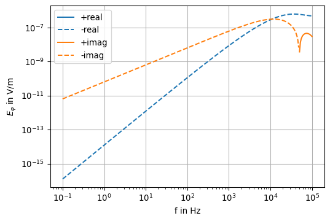
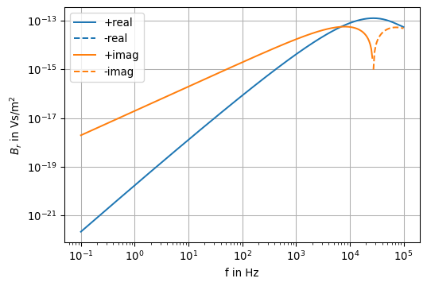
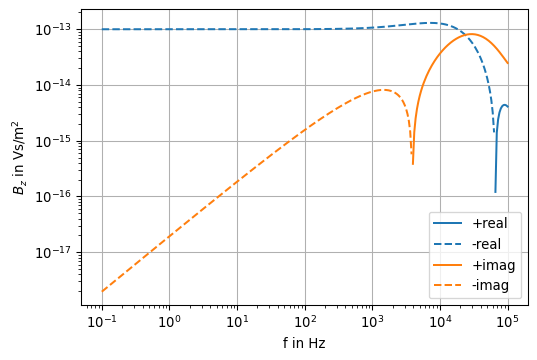

Show the code
r = sp.symbols('r', positive=True, real=True)
z = sp.symbols('z', real=True)
k = sp.symbols('k')
R = sp.sqrt(r**2 + z**2)
G = sp.exp(-sp.I * k * R ) / R
G\(\displaystyle \frac{e^{- i k \sqrt{r^{2} + z^{2}}}}{\sqrt{r^{2} + z^{2}}}\)
Often, the knowledge of the electric and/or magnetic field at the surface of a homogeneous Earth is sufficient. However, the calculation of the Hankel integral is – even in the homogeneous case – numerically not trivial.
Later we will learn how to evaluate them properly.
For now, let’s simplify the configuration by setting \(h=0\) and \(z=0\). We refer to this configuration as the horizontal coplanar configuration (which is generally not restricted to the plane \(z=0\)).
With the help of this simplification it is possible to rewrite the integrals. The results are closed form expressions.
It is possible to estimate what field amplitudes can be expected at a given offset-frequency regime.
In a conducting medium with \(\lambda_1^2 = \lambda^2 - k_1^2\), \(h=0\), and \(z=0\), there holds
\[ \begin{equation} E_\varphi = -\frac{i \omega \mu_0 m}{2 \pi} \int_0^\infty \frac{\lambda^2}{\lambda + \lambda_1} J_1(\lambda r) \, \dd\lambda \end{equation} \]
\[ \begin{equation} H_r = \frac{m}{2 \pi} \int_0^\infty \frac{\lambda_1 \lambda^2}{\lambda + \lambda_1} J_1(\lambda r) \, \dd\lambda \end{equation} \]
\[ \begin{equation} H_z = \frac{m}{2 \pi} \int_0^\infty \frac{\lambda^3}{\lambda + \lambda_1} J_0(\lambda r) \, \dd\lambda \end{equation} \]
In the following we try to rewrite the integral. Recalling the properties of the Bessel function we first write \[ \begin{equation} E_\varphi = \frac{i \omega \mu_0 m}{2 \pi} \partial_r \int_0^\infty \frac{\lambda}{\lambda + \lambda_1} J_0(\lambda r) \, \dd\lambda \end{equation} \] Second, we expand the integrand with \(\lambda - \lambda_1\), i.e., \[ \frac{\lambda}{\lambda + \lambda_1} = \frac{\lambda(\lambda - \lambda_1)}{\lambda^2 - \lambda_1^2} = \frac{1}{k_1^2} \left( \lambda^2 - \lambda \lambda_1 \right) \]
We obtain \[ \begin{equation} E_\varphi = \frac{i \omega \mu_0 m}{2 \pi k_1^2} \partial_r \left[ \int_0^\infty \lambda^2 J_0(\lambda r) \, d\lambda - \int_0^\infty \lambda \lambda_1 J_0(\lambda r) \, \dd\lambda \right]. \end{equation} \tag{10.1}\]
With \(R^2 = r^2 + z^2\) there holds the following identity (Weber integral) \[ \begin{equation} \frac{1}{R} = \int_0^\infty e^{-\lambda z} J_0(\lambda r)\, d\lambda. \end{equation} \tag{10.2}\] After differentiating both sides of 10.2 twice w.r.t. \(z\), we obtain \[ \frac{\partial^2}{\partial z^2} \frac{1}{R} = \int_0^\infty \lambda^2 e^{-\lambda z} J_0(\lambda r)\, \dd\lambda. \]
\[ \frac{\partial^2}{\partial z^2} \frac{1}{R} \bigg|_{z=0} = \int_0^\infty \lambda^2 J_0(\lambda r)\, \dd\lambda. \] We see, that for \(z=0\) this resembles the first integral in the xpression of \(E_\varphi\) given in 10.1.
The Sommerfeld integral is \[ \begin{equation} \frac{e^{-i k_1 R}}{R} = \int_0^\infty \frac{\lambda}{\lambda_1} e^{-\lambda_1 z} J_0(\lambda r)\, \dd\lambda. \end{equation} \tag{10.3}\]
Likewise, we obtain the second integral expression when we differentiate the Sommerfeld integral 10.3 twice w.r.t. \(z\): \[ \frac{\partial^2}{\partial z^2} \frac{e^{-i k_1 R}}{R} = \int_0^\infty {\lambda}{\lambda_1} e^{-\lambda_1 z} J_0(\lambda r)\, \dd\lambda \]
\[ \frac{\partial^2}{\partial z^2} \frac{e^{-i k_1 R}}{R}\bigg|_{z=0} = \int_0^\infty {\lambda}{\lambda_1} J_0(\lambda r)\, \dd\lambda \]
We see that we are able to express the above integrals in the expression for \(E_\varphi\) by means of derivatives of the Weber and Sommerfeld integrals.
The point is, that we can replace the integrals just by functions of \(R\)!
We define sympy expressions and let Python do the work for us.
r = sp.symbols('r', positive=True, real=True)
z = sp.symbols('z', real=True)
k = sp.symbols('k')
R = sp.sqrt(r**2 + z**2)
G = sp.exp(-sp.I * k * R ) / R
G\(\displaystyle \frac{e^{- i k \sqrt{r^{2} + z^{2}}}}{\sqrt{r^{2} + z^{2}}}\)
The second derivative of the Weber integral, i.e., \(1/R\), w.r.t. \(z\) is
Rzz = sp.diff(1 / R, z, 2)
Rzz.simplify()\(\displaystyle \frac{- r^{2} + 2 z^{2}}{\left(r^{2} + z^{2}\right)^{\frac{5}{2}}}\)
Now, we set \(z=0\) and obtain
Rzz.subs(z, 0)\(\displaystyle - \frac{1}{r^{3}}\)
i.e., \[ \pdv[2]{}{z} \frac{1}{R} \bigg|_{z=0} = -\frac{1}{r^3}. \] Further, the left-hand side of the Sommerfeld integral is \[ \frac{e^{-i k_1 R}}{R}, \] and its second derivative w.r.t. \(z\) is
Gzz = sp.diff(G, z, 2)
Gzz.simplify()\(\displaystyle \frac{\left(2 i k z^{2} \left(r^{2} + z^{2}\right)^{6} - k \left(r^{2} + z^{2}\right)^{\frac{9}{2}} \left(k z^{2} \left(r^{2} + z^{2}\right)^{2} - i z^{2} \left(r^{2} + z^{2}\right)^{\frac{3}{2}} + i \left(r^{2} + z^{2}\right)^{\frac{5}{2}}\right) + \left(- r^{2} + 2 z^{2}\right) \left(r^{2} + z^{2}\right)^{\frac{11}{2}}\right) e^{- i k \sqrt{r^{2} + z^{2}}}}{\left(r^{2} + z^{2}\right)^{8}}\)
which, after setting \(z=0\), becomes
Gzz.subs(z, 0).simplify()\(\displaystyle \frac{\left(- i k r - 1\right) e^{- i k r}}{r^{3}}\)
Finally, we apply the derivative w.r.t. \(r\) to both results and obtain
ex = sp.diff(Rzz, r).subs(z,0) - sp.diff(Gzz, r).subs(z, 0)
ex.simplify()\(\displaystyle \frac{\left(k^{2} r^{2} - 3 i k r + 3 e^{i k r} - 3\right) e^{- i k r}}{r^{4}}\)
We recognize that \[ \pdv{}{r} \left[ \int_0^\infty \lambda^2 J_0(\lambda r) \, \dd\lambda - \int_0^\infty \lambda \lambda_1 J_0(\lambda r) \, \dd\lambda \right] = \frac{ 3 - (3 + 3 ikr - k^2 r^2) e^{-ikr}}{r^4}. \]
Incorporating the leading factor of \(E_\varphi\) we get the result \[ E_\varphi(r, \omega) = -\frac{m}{2 \pi \sigma r^4} \left[ 3 - (3 + 3 ikr - k^2 r^2) e^{-ikr} \right] \]
For later evaluation we implement this result as a function:
def Ephi(r, omega, sigma):
mu_0 = np.pi * 4e-7
k = np.sqrt(-1j * omega * mu_0 * sigma)
E = 3 - (3 + 3 * 1j * k * r - k**2 * r**2) * \
np.exp(-1j * k * r)
E *= -1 / (2 * np.pi * sigma * r**4)
return EThe expressions for \(B_z\) and \(B_r\) for \(z=0\) and \(h=0\) can be obtained in a similar fashion.
Note that the conversion for \(B_r\) is slightly more involved.
For the magnetic field we find closed-form expressions using similar tricks.
Specifically, we obtain
\[ B_z(r, \omega) = \frac{\mu_0 m}{2 \pi k^2 r^5} \left[ 9 - (9 + 9ikr - 4k^2 r^2 - ik^3r^3) e^{-ikr} \right] \]
\[ B_r(r, \omega) = -\frac{\mu_0 m k^2}{4 \pi r} \left[ I_1(\alpha)K_1(\alpha) - I_2(\alpha)K_2(\alpha) \right] \]
The functions \(I_1, I_2, K_1, K_2\) are the modified Bessel functions of the first kind and order 1 and 2 with complex argument \(\alpha = \dfrac{ikr}{2}\).
Python implementation:
from scipy.special import kv, iv
# iv = lambda n, z: 1j ** (-n) * jv(n, 1j * z)
def Br(r, omega, sigma):
mu_0 = np.pi * 4e-7
k = np.sqrt(-1j * omega * mu_0 * sigma)
alpha = 1j * k * r / 2.0
B = iv(1, alpha) * kv(1, alpha) - iv(2, alpha) * kv(2, alpha)
B *= -mu_0 * k**2 / (4 * np.pi * r)
return B
def Bz(r, omega, sigma):
mu_0 = np.pi * 4e-7
k = np.sqrt(-1j * omega * mu_0 * sigma)
B = 9 - (9 + 9 * 1j * k * r - 4 * k**2 * r**2 - 1j * k**3 * r**3) * np.exp(-1j * k * r)
B *= mu_0 / (2 * np.pi * k**2 * r**5)
return BThe final expressions in the frequency domain are given by
\[ \begin{align} E_\varphi(r, \omega) & = -\frac{m}{2 \pi \sigma r^4} \left[ 3 - (3 + 3 ikr - k^2 r^2) e^{-ikr} \right] \\ B_z(r, \omega) & = \frac{\mu_0 m}{2 \pi k^2 r^5} \left[ 9 - (9 + 9ikr - 4k^2 r^2 - ik^3r^3) e^{-ikr} \right] \\ B_r(r, \omega) & = -\frac{\mu_0 m k^2}{4 \pi r} \left[ I_1(\alpha)K_1(\alpha) - I_2(\alpha)K_2(\alpha) \right] \end{align} \tag{10.4}\]
\(\alpha = \dfrac{i k r}{2}\)
As an example, we choose a homogeneous ground with conductivity \(\sigma = 0.01\) S/m. The transmitter-receiver offset is \(100\) m. The frequencies cover a range from \(10^{-1} \le f \le 10^5\) Hz.
r = 100.0
sigma = 0.01
f = np.logspace(-1, 5, 301, endpoint=True)
E_phi = [Ephi(r, 2 * np.pi * v, sigma) for v in f]
B_r = [Br(r, 2 * np.pi * v, sigma) for v in f]
B_z = [Bz(r, 2 * np.pi * v, sigma) for v in f]def pos(data):
"""Return positive data; set negative data to NaN."""
return np.where(data > 0, data, np.nan)
def plotfield(f, field):
fig, ax = plt.subplots(1, 1, figsize=(6,4))
ax.loglog(f, pos(np.real(field)), 'C0-', label='+real')
ax.loglog(f, pos(-np.real(field)), 'C0--', label='-real')
ax.loglog(f, pos(np.imag(field)), 'C1-', label='+imag')
ax.loglog(f, pos(-np.imag(field)), 'C1--', label='-imag')
ax.grid(True)
ax.legend()
ax.set_xlabel('f in Hz')
return axax = plotfield(f, E_phi)
ax.set_ylabel(r'$E_\varphi$ in V/m')
ax
ax = plotfield(f, B_r)
ax.set_ylabel(r'$B_r$ in Vs/m$^2$')
ax
ax = plotfield(f, B_z)
ax.set_ylabel(r'$B_z$ in Vs/m$^2$')
ax
The last plot for \(B_z\) can be verified using Fig. 4.2 in Ward & Hohmann (1988). Note that \(H_z\) is plotted in the following reference figure:

For completeness, this is Fig. 4.3 of Ward & Hohmann (1988), which displays \(H_r\):

Following the ideas outlined in Section 8.2.5, we transform the field expressions 10.4 for a VMD in HCP configuration at \(z=0\) into the time domain.
The final expressions for \(e_\varphi\), \(b_z\), and \(\pdv{b_z}{t}\) can be easily obtained using 8.1, 8.2, and 8.3, and are given by
\[ \begin{align} e_\varphi &= -\frac{m}{2 \pi \sigma r^4} \left[ 3 \mathrm{erfc}(\Theta r) - \frac{2}{\sqrt{\pi}} \Theta r (3 + 2 \Theta^2 r^2 ) e^{-\Theta^2 r^2} \right] \\ b_z &= \frac{\mu_0 m}{4 \pi r^3} \left[ \frac{9}{2 \theta^2 r^2}\mathrm{erf}(\Theta r) -\mathrm{erf}(\Theta r) - \frac{1}{\sqrt{\pi}} \left( \frac{9}{\Theta r} + 4 \Theta r \right) e^{-\Theta^2 r^2} \right] \\ \pdv{b_z}{t} &= \frac{m}{2 \pi \sigma r^5} \left[ 9 \mathrm{erf}(\Theta r) - \frac{2 \Theta r}{\sqrt{\pi}} \left( 9 + 6 \Theta^2 r^2 + 4 \Theta^4 r^4 \right) e^{-\Theta^2 r^2} \right] \end{align} \]
\(\Theta = \left( \dfrac{\sigma \mu_0}{4 t}\right)^{1/2}\)